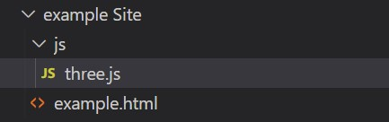

First thing is first we need to set up three.js...
Copy the contents of three.js using ctrl + A to select all then ctrl + C to copy.
Now in Visual Studio Code (or your IDE of choice) in your html location create the folder js with the file three.js inside it like this:
Finally open the new three.js file. Do ctrl + V and paste all the code within and save.
Three.js is now in your site folder but now we need to connect it to your html...
Within your html file add a style tag and edit the body margin to 0 like this:
<head>
<style>
body {
margin: 0
}
</style>
</head>
Now in the body add a script tag with the src to three.js like this:
<body>
<script src="js/three.js"> </script>
</body>
That's it and now your html file is set up with Three.js! The html code should now look like this:
example.html
<!doctype html>
<meta charset="utf-8">
<title>Cube One Example</title>
<html>
<head>
<style>
body {
margin: 0;
}
</style>
</head>
<body>
<script src="js/three.js"> </script>
</body>
</html>
Now that we have Three.js setup we can begin to make our cube. First we need to set up where our cube is on the page using a scene by adding the following script to the body:
<body>
<script src="js/three.js"> </script>
<script>
const scene = new THREE.Scene();
const camera = new THREE.PerspectiveCamera( 75, window.innerWidth / window.innerHeight, 0.1, 1000 );
const renderer = new THREE.WebGLRenderer();
renderer.setSize( window.innerWidth, window.innerHeight );
document.body.appendChild( renderer.domElement );
</script>
</body>
PerspectiveCamera(fov: Number, aspect: Number, near: Number, far: Number<!---Normal resolution---> setSize( window.innerWidth, window.innerHeight )
<!---Quarter Size---> setSize( window.innerWidth/2, window.innerHeight/2 )
<!---Half resolution---> setSize( window.innerWidth/2, window.innerHeight/2, false )
Now we have the scene, camera and renderer ready for our 3D content.
With the scene, camera and renderer set we can add the geometry and material. Then depending on the geometry and material set we create an object. This is how we make our cube object:
<body>
<script src="js/three.js"> </script>
<script>
. . .
const geometry = new THREE.BoxGeometry();
const material = new THREE.MeshBasicMaterial( { color: 'red' } );
const cube = new THREE.Mesh( geometry, material );
scene.add( cube );
camera.position.z = 5;
</script>
</body>For other shapes you change the geometry. Other shapes examples:
<script src="js/three.js"> </script>
<script>
const Circle = new THREE.CircleGeometry()
const Cone = new THREE.ConeGeometry()
const Cylinder = new THREE.CylinderGeometry()
const Octahedron = new THREE.OctahedronGeometry()
</script>Now that our object has been created and added to the scene we can now render it onto the site:
<body>
<script src="js/three.js"> </script>
<script>
. . .
function animate() {
requestAnimationFrame( animate );
renderer.render( scene, camera );
}
animate();
</script>
</body>
Now when you start your html it should look like this:
Hooray! We have visuals! Now we can animate the object to do what we want, in this example you'll make it rotate.
In the animate function, select the object "cube" to rotate and the direction x or y to add and equal a number:
<script src="js/three.js"> </script>
<script>
. . .
function animate() {
requestAnimationFrame( animate );
cube.rotation.x += 0.01;
cube.rotation.y += 0.01;
renderer.render( scene, camera );
}
</script>That's it! If everything is correct it should look like this: